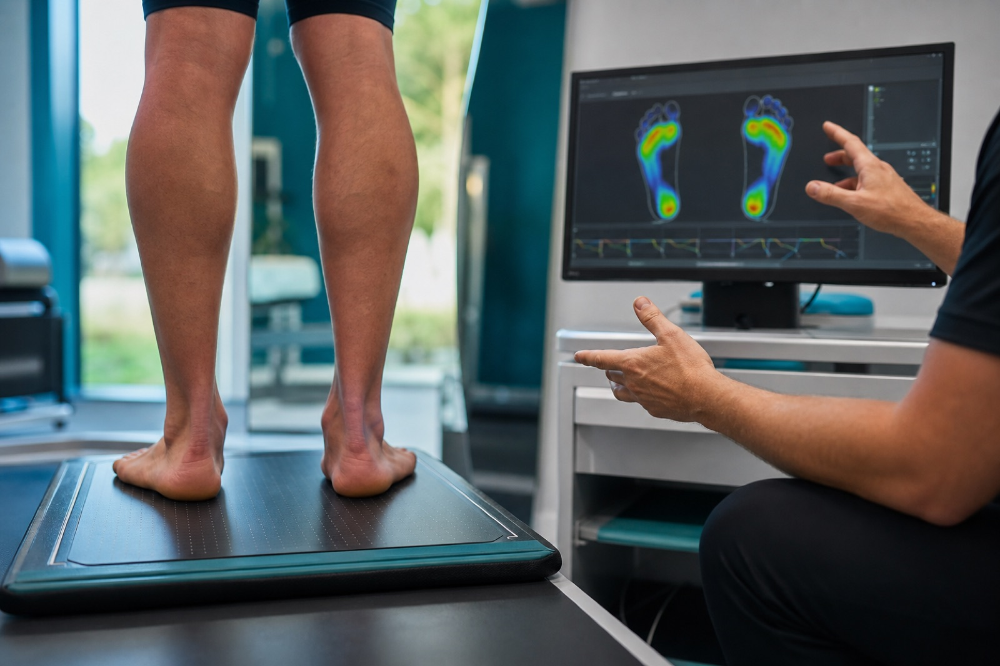

Exploración útil
Motivo de consulta, calzado, actividad y zonas de carga.
C/ Barcelona 30, 3º5ª · Salou

PISADA, MOVIMIENTO Y PREVENCIÓN
Una valoración orientada por síntomas, actividad y antecedentes ayuda a distinguir entre cuidado habitual, biomecánica y atención especializada.
Motivo de consulta, calzado, actividad y zonas de carga.
Quiropodia, biomecánica, ortopodología, cirugía ungueal y láser.
Especial atención al pie deportivo, diabético o de riesgo.
Para una consulta biomecánica puede ser útil llevar el calzado que utilizas habitualmente.
Exploración, calzado y plantillas personalizadas.
Prevención y valoración de zonas de riesgo.
Podólogo colegiado nº 1172 COLPC.